Allan Commelin, étudiant de 23 ans en M2 DEV à l’ECV Digital. Diplômé d’un
DUT MMI et d’un Bachelor Chef de projet Digital.
Passionné par le développement web, je suis actuellement en
alternance chez Aono en tant que développeur full-stack.

Baccalauréat STI2D (Science et Technologie de l’industrie et
du développement durable) au lycée Denis Diderot en Haute-Marne.
Spécialité SIN, système d’information et numérique :
- Bases de l’informatique (binaire, décimal, hexadécimal, etc…).
- Premier site web (HTML / CSS).
- Projet de fin d’année sur une carte Arduino en C.
DUT MMI (Métier du multimédia et de l’Internet) à l’IUT de Troyes.
Découverte du web design, marketing, réseaux, infographie,
communication, audiovisuel et développement front et back.
Spécialisation S4 développement back-end. Stage de fin d'année


 



Mastère en 3 ans :
1 année généraliste en Bachelor Chef de projet digital, une vision
360 dans le digital, mieux comprendre comment chaque secteur
intervient dans la mise en place d’une stratégie digitale.
Un stage de 6 mois dans une agence web spécialisée dans le
domaine médical en tant que développeur full-stack.
2 années de spécialisation en Mastère développement web. Apprentissage et tour d’horizon des technos web les plus utilisées.


Alternance avec un rythme de 4j / 5 en entreprise qui a permis de se professionnaliser et de gagner très rapidement en compétences.
Agence web à Dijon qui développait en parallèle une solution,
ZeLift, un moteur de recherche pour les artisans et les
commerçants des centres-villes.
Stage de 2 mois, en tant que développeur back-end sur
Symfony (PHP) et Javascript Vanilla.
Beaucoup de recettages et de débogages du code existant.
Une agence digitale dédiée aux professionnels de santé.
Stage de 6 mois en tant que développeur full-stack, élaboration
du projet de A à Z, du cahier des charges à la production.
Un annuaire regroupant 1500 sites de chirurgiens dentistes.
Un vrai challenge de porter un projet en totale autonomie sur un
nouveau langage.

Une agence qui accompagne les marques du sport (Annonceurs,
Fédérations, Clubs, Sportifs), le pôle développement est récent.
Alternance de 2 ans, en tant que développeur full-stack
principalement sur Probot, un outil permettant aux sports amateurs de
passer le cap de la digitalisation à destination de la FFF.
Mais également sur des projets en parallèle pour des gros comptes
comme Intermarché ou même Arkema.

Mon parcours scolaire m’a permis de pouvoir être actif dans
tous les secteurs du digital et de pouvoir être force de proposition.
J’ai pu prendre énormément en compétences dans le domaine du
développement web, qui me passionne depuis maintenant 5 ans, grâce à mes formations et à mes expériences.

D'ici 2 ans, je pense être toujours développeur full-stack, en CDI, dans une agence ou dans une entreprise / start-up.
Dans 5 ans je me vois manager une équipe de développeurs et dans 10/15 ans, le poste de CTO serait pour moi, un bel objectif.
Mon leitmotiv professionnel ?
"Il n'y a pas de problème, que des solutions !"